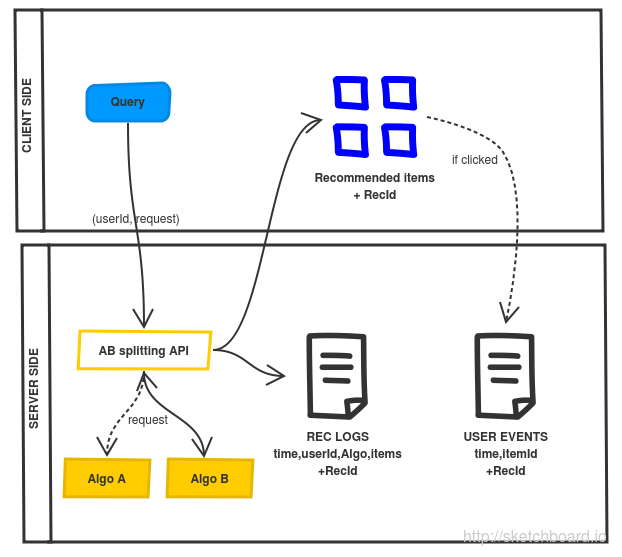

A few lessons learnt running A/B tests
What is A/B testing?
A data driven decision procedure
Two or more variants
Compared using an audience based metric
While "all other things are equal"
The latter is crucial!
Simultaneous
Over (at least) a whole business cycle
Fair split of users
Statistical hypothesis testing
Dwell time
$n$ user dwell times measurements with noise $\sigma$
$\text{Average Use Dwell Time} \sim \mathcal{N}(\mu, \frac{\sigma}{\sqrt{n}})$ (CLT)
$H_0$ : $\mu_A = \mu_B$ versus $H_1$ : $\mu_A \neq \mu_B$
Click Through Rate $p$
$n$ impressions with outcome $\{0,1\}$
$\text{#Clicks} \sim Bin(n, p)$, then if $n$ large, $p \approx \mathcal{N}(np , np(1-p))$
Decision rule between $H_0$ and $H_1$
Evaluate $H_0$ versus $H_1$ based on actual samples
Is the significance level $\alpha$ (false positive rate) low enough
Minimum Effect Difference, noise and $\alpha$ $\Rightarrow$ $n$
Statistical tooling : the t-test
From
http://www.evanmiller.org/ab-testing/t-test.html
Caveats and pitfalls
Abundant litterature
"How not to run an AB test?"
"Most winning A/B test results are illusory"
"No free samples"
Breaking assumptions
Early peeking: not fixing $n$ in advance
Multiple testing: $P[FP] = 1 - 0.95 \times 0.95 \times \ldots$
Individual measurements not i.i.d.
Or misunderstandings
Reversion to mediocrity
Global model may be to coarse $\Rightarrow$ personalisation!
Agile thinking is relevant for AB testing
Things can go wrong in so many ways
Collection biases
Insensitive metric
Spill over effects
$\Rightarrow$ release early, start with A/A/B tests
With practise comes success!
But don't test randomly
Come up with hypothesis
Sketch out possible outcomes and conclusions beforehand
Validate as much as possible off-line
The off-line / on-line testing methodology
From a Netflix
blog post
Data collection
Server side logging
Join
RecLogs
with
UserEvents
on
userId,itemId,timestamp
Pros : no client side instrumentation
Cons : less specific
Additional client side logging
Join
RecLogs
with
UserEvents
on
recId
Pros : more accurate
Cons : client side work

To go further
AB tests as $\epsilon$ first Multi Armed Bandits
https://www.chrisstucchio.com/blog/2012/bandit_algorithms_vs_ab.html
http://www.cs.mcgill.ca/~vkules/bandits.pdf
Bayesian AB testing
http://engineering.richrelevance.com/bayesian-ab-tests
http://developers.lyst.com/data/2014/05/10/bayesian-ab-testing/
https://www.udacity.com/course/ab-testing--ud257
Long term effects
Focusing on the Long-term: It's Good for Users and Business
On-line course
https://www.udacity.com/course/ab-testing--ud257
←
→
/
Go to slide: